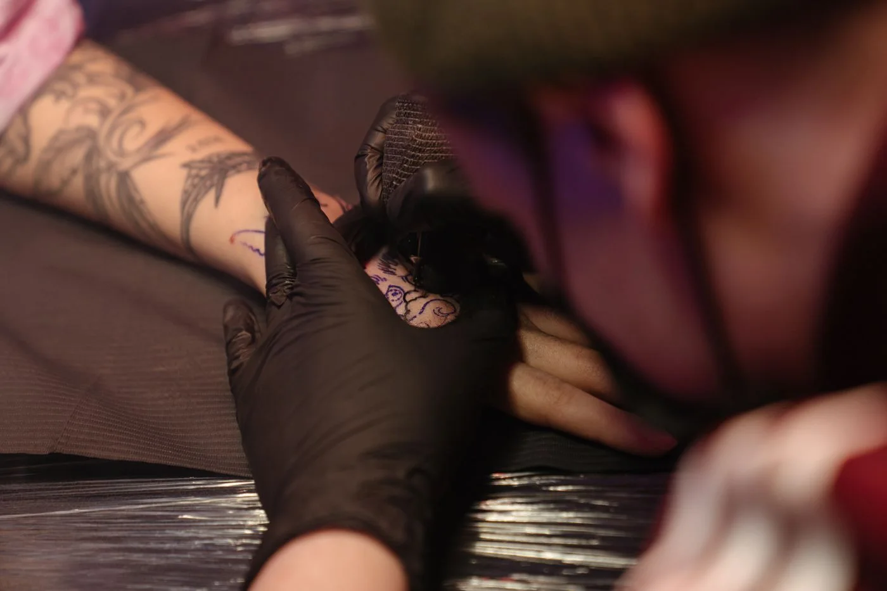
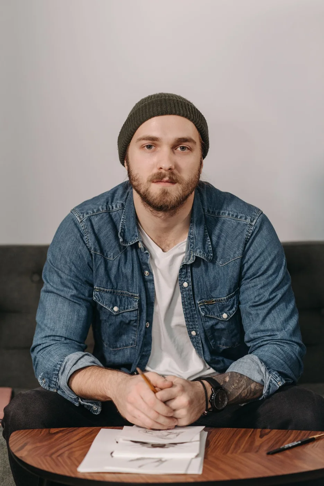
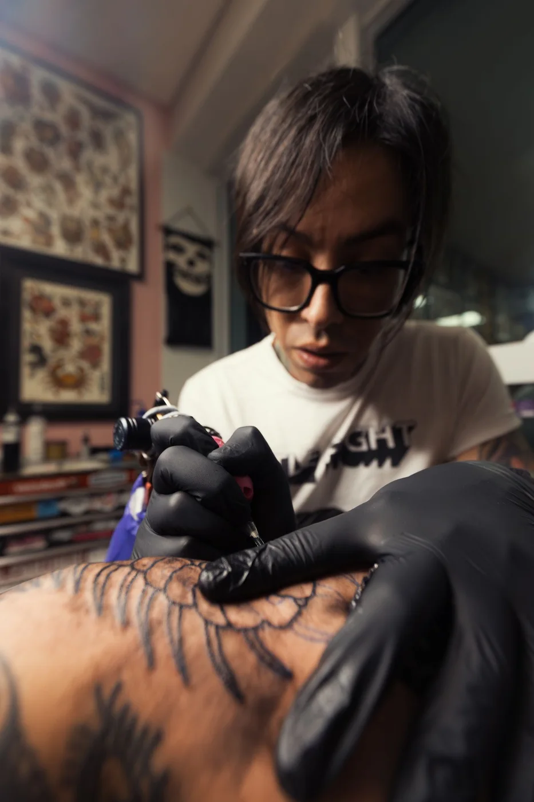

НА КОЖЕ.
Графика. Ботаника. Цвет.
Что-то точно зацепит.
РЕАЛЬНЫЕ ФОТО / ПОДБОРКА ДЛЯ КОНЦЕПТА
РИСУНОК. ПРИМЕРКА. ЗВУК МАШИНКИ.ЗА
ЗА
РАБОТОЙ.
Сначала — разговор.
Потом — всё остальное.



Не обязательно приходить с готовым рисунком.
Достаточно идеи, которую хочется набить.
ТВОЁ ТЕЛО. ТВОЁ ДЕЛО.ПЕРМЬ / КОНЦЕПТ ТАТУ-СТУДИИ
ЕСТЬ
ИДЕЯ?
Даже если пока
только в общих чертах.
КАКУЮ ТАТУИРОВКУ ТЫ ХОЧЕШЬ?Наверх